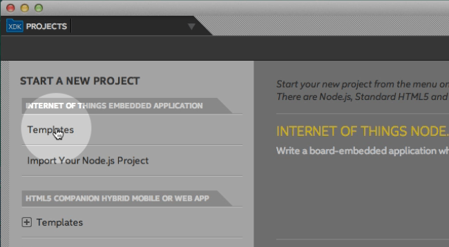
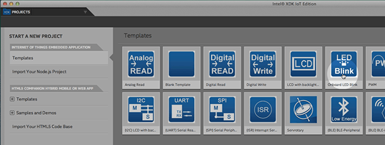
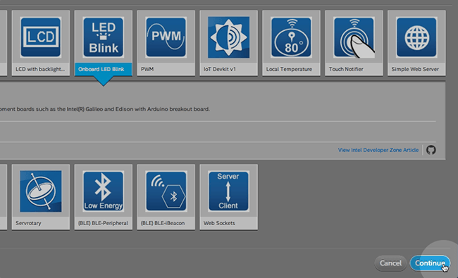
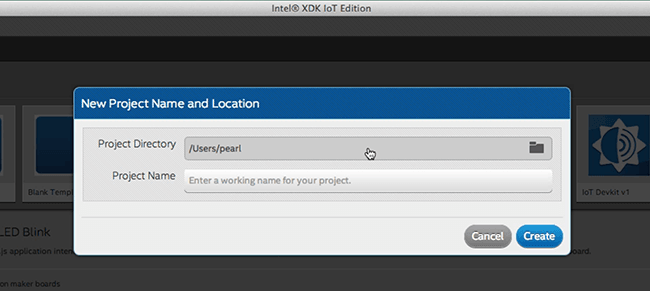
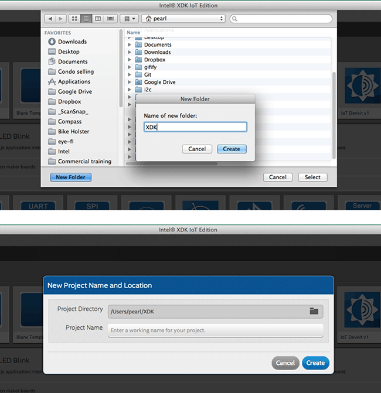
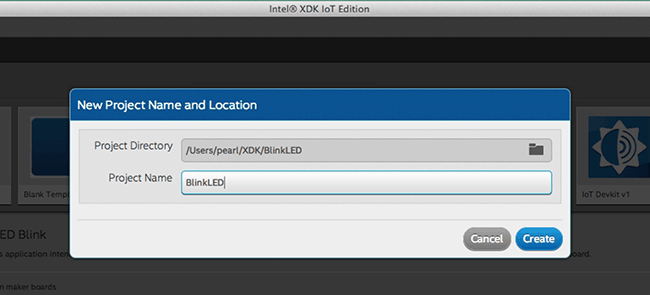
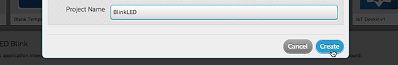
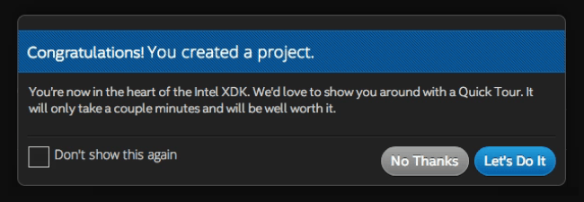

-
Under the “Internet of Things Embedded Application” option in the lefthand menu, select “Templates”.

-
A list of templates for developing Node.js applications will be shown. Select “LED Blink”.

-
Click Continue in the bottom right.

-
Choose a project directory for your project files.

If this is the first time using the Intel® XDK, we recommend creating a separate “XDK” folder for your files.

-
Enter a name for your project such as “BlinkLED”.

-
Click “Create”.

-
A popup will confirm the successful creation of your Blink LED project.
If this is the first time using the Intel® XDK, we recommend you take the Quick Tour.
